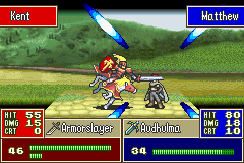
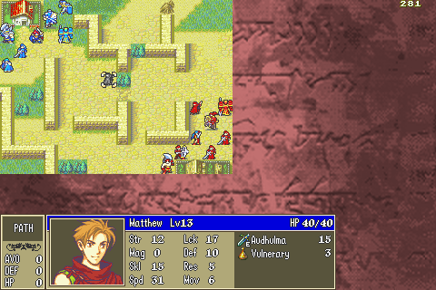
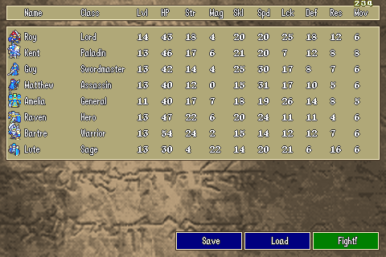

FEMultiplayer
Fire Emblem Multiplayer Application
Developers:
- Shawn 'chudooder' Wu: Networking, sound design, graphics
- Young 'jedyobidan' Wang: Game logic, programming
- Chase Terry: Artifical intelligence
What is Fire Emblem: Multiplayer?
Our goal with this project is to recreate the tactical, turn-based gameplay of the GBA Fire Emblem games, while allowing for online multiplayer that does not sacrifice too many gameplay features. Previous official Fire Emblem multiplayer modes have been lackluster. The Link Arena had limited functionality, only simulating battles between units without the tactical aspects of army movement; while the multiplayer mode from Shadow Dragon, while fully featured, forced the player to use units from their Single Player campaign, only had one game mode, and had the unfortunate characteristic of being partnered with a terrible game.
New Features
- Online multiplayer! Face off against your friends in tactical Fire Emblem action. The lobby system even supports spectators!
- Team building! Create the team of your choosing, starring characters from Blazing Sword and The Sacred Stones (plus a few from other games)!
- Custom maps and game modes! Rout the enemy, rescue the flag, or capture the throne!
Changes
We deliberately took out some gameplay elements because of the single-match, multiplayer setting.
- Arenas, shops, and treasure chests aren't in the game.
- Units don't level up in game (you can distribute experience beforehand)
- All units start in the promoted version of their class.
- True hit is gone. The chance to hit is actually the chance to hit.
- Some characters have slightly different skills for balance reasons.
- Not all characters from the games are in our version; we left out units with extremely subpar stats and growths.
- Units do not persist from game to game, and are reset for each match. There is a possiblity for a campaign battle mode, which would feature permadeath and leveling in successive objective-based matches.
System requirements
- Java 6 or newer
- An internet connection
- A graphics card (or integrated graphics)
Special thanks
- Jeff Mickel
- FEPlanet
- SerenesForest
- Intelligent Systems
Screenshots


